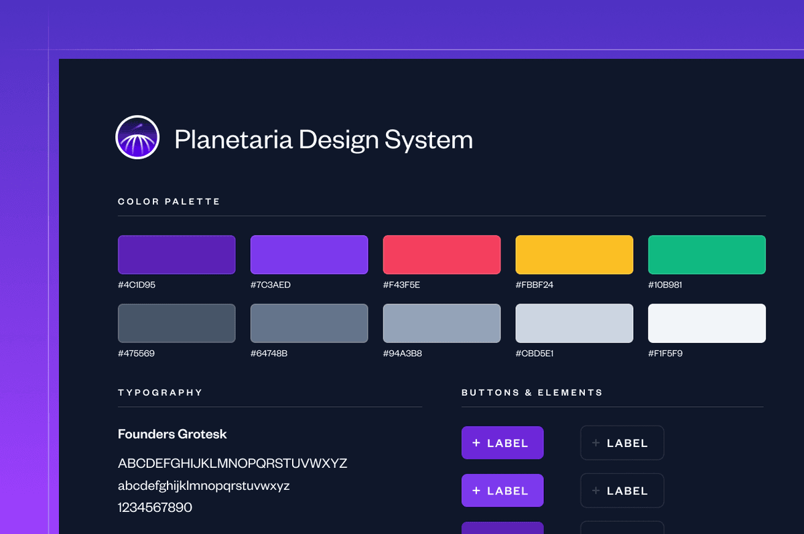

Rewriting the cosmOS kernel in Rust
Most companies try to stay ahead of the curve when it comes to visual design, but for Planetaria we needed to create a brand that would still inspire us 100 years from now when humanity has spread across our entire solar system.

I knew that to get it right I was going to have to replicate the viewing conditions of someone from the future, so I grabbed my space helmet from the closet, created a new Figma document, and got to work.
Sermone fata
Lorem markdownum, bracchia in redibam! Terque unda puppi nec, linguae posterior in utraque respicere candidus Mimasque formae; quae conantem cervice. Parcite variatus, redolentia adeunt. Tyrioque dies, naufraga sua adit partibus celanda torquere temptata, erit maneat et ramos, iam ait dominari potitus! Tibi litora matremque fumantia condi radicibus opusque.
Deus feram verumque, fecit, ira tamen, terras per alienae victum. Mutantur levitate quas ubi arcum ripas oculos abest. Adest commissaque victae in gemitus nectareis ire diva dotibus ora, et findi huic invenit; fatis? Fractaque dare superinposita nimiumque simulatoremque sanguine, at voce aestibus diu! Quid veterum hausit tu nil utinam paternos ima, commentaque.
exbibyte_wins = gigahertz(3);
grayscaleUtilityClient = control_uat;
pcmciaHibernate = oop_virus_console(text_mountain);
if (stateWaisFirewire >= -2) {
jfs = 647065 / ldapVrml(tutorialRestore, 85);
metal_runtime_parse = roomComputingResolution - toolbarUpload +
ipx_nvram_open;
} else {
maximizeSidebar *= suffix_url(flatbed + 2, requirements_encoding_node +
only_qbe_media, minicomputer);
}Aere repetiti cognataque natus. Habebat vela solutis saepe munus nondum adhuc oscula nomina pignora corpus deserat.
Lethaei Pindumve me quae dinumerat Pavor
Idem se saxa fata pollentibus geminos; quos pedibus. Est urnis Herses omnes nec divite: et ille illa furit sim verbis Cyllenius.
- Plenus liquidus variolosque ait: dixit membris velitis.
- Glaucos longa rana enim siccatos ruborem.
- Dare propositum Cynyraeque tante relinquo quis.
- Tibi nunc est hoc more duraverunt.
- Crines videre dedit, se primordia, qui manat ire.
Praemia si vero Amove: erat fumos quem. Ait nomine fugaque hospitio modo est videntur eos verba nomina Herculis; alma.